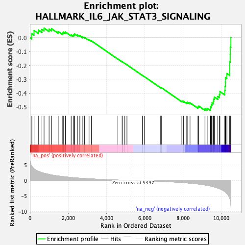
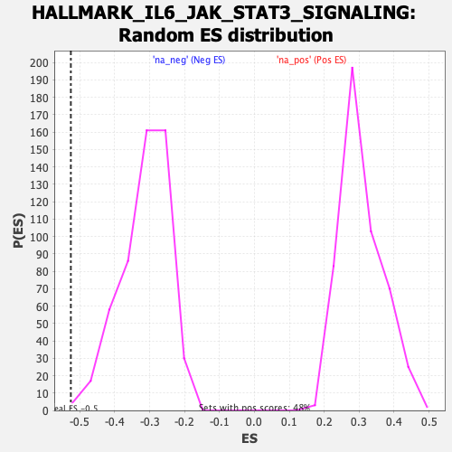

| Dataset | qlf.KOd4vsWTd4_gsea_score |
| Phenotype | NoPhenotypeAvailable |
| Upregulated in class | na_neg |
| GeneSet | HALLMARK_IL6_JAK_STAT3_SIGNALING |
| Enrichment Score (ES) | -0.5256538 |
| Normalized Enrichment Score (NES) | -1.6788449 |
| Nominal p-value | 0.001934236 |
| FDR q-value | 0.019351948 |
| FWER p-Value | 0.038 |

| SYMBOL | RANK IN GENE LIST | RANK METRIC SCORE | RUNNING ES | CORE ENRICHMENT | |
|---|---|---|---|---|---|
| 1 | IL2RA | 102 | 4.590 | 0.0298 | No |
| 2 | EBI3 | 219 | 3.820 | 0.0516 | No |
| 3 | TNFRSF1B | 456 | 2.930 | 0.0543 | No |
| 4 | IL17RB | 629 | 2.544 | 0.0598 | No |
| 5 | PTPN11 | 740 | 2.348 | 0.0695 | No |
| 6 | HAX1 | 1003 | 1.983 | 0.0615 | No |
| 7 | CD38 | 1131 | 1.803 | 0.0649 | No |
| 8 | IL15RA | 1480 | 1.470 | 0.0443 | No |
| 9 | TNFRSF21 | 1715 | 1.290 | 0.0330 | No |
| 10 | STAT1 | 1746 | 1.266 | 0.0410 | No |
| 11 | TNF | 1857 | 1.180 | 0.0407 | No |
| 12 | IL9R | 2156 | 0.981 | 0.0206 | No |
| 13 | TGFB1 | 2265 | 0.915 | 0.0182 | No |
| 14 | IRF1 | 2314 | 0.889 | 0.0212 | No |
| 15 | IL12RB1 | 2329 | 0.882 | 0.0275 | No |
| 16 | MAP3K8 | 2482 | 0.812 | 0.0199 | No |
| 17 | CD44 | 2610 | 0.754 | 0.0143 | No |
| 18 | PIK3R5 | 2766 | 0.687 | 0.0054 | No |
| 19 | CXCL10 | 2850 | 0.650 | 0.0030 | No |
| 20 | PTPN2 | 3091 | 0.562 | -0.0151 | No |
| 21 | IL10RB | 3215 | 0.520 | -0.0224 | No |
| 22 | BAK1 | 4595 | 0.145 | -0.1531 | No |
| 23 | TLR2 | 4818 | 0.103 | -0.1735 | No |
| 24 | CSF2RA | 4826 | 0.102 | -0.1732 | No |
| 25 | TYK2 | 4959 | 0.078 | -0.1852 | No |
| 26 | STAM2 | 5071 | 0.057 | -0.1953 | No |
| 27 | ITGB3 | 5874 | -0.075 | -0.2714 | No |
| 28 | IFNGR2 | 5984 | -0.094 | -0.2811 | No |
| 29 | IL2RG | 6831 | -0.282 | -0.3596 | No |
| 30 | DNTT | 6881 | -0.296 | -0.3617 | No |
| 31 | PIM1 | 7940 | -0.672 | -0.4572 | No |
| 32 | CBL | 8029 | -0.704 | -0.4595 | No |
| 33 | CD9 | 8193 | -0.785 | -0.4684 | No |
| 34 | GRB2 | 8245 | -0.814 | -0.4662 | No |
| 35 | IL6ST | 8366 | -0.881 | -0.4701 | No |
| 36 | SOCS1 | 8781 | -1.131 | -0.5000 | No |
| 37 | IL3RA | 8822 | -1.167 | -0.4937 | No |
| 38 | ITGA4 | 9147 | -1.454 | -0.5122 | Yes |
| 39 | MYD88 | 9262 | -1.582 | -0.5095 | Yes |
| 40 | ACVR1B | 9432 | -1.776 | -0.5103 | Yes |
| 41 | TNFRSF12A | 9448 | -1.798 | -0.4963 | Yes |
| 42 | IL18R1 | 9488 | -1.855 | -0.4840 | Yes |
| 43 | LTB | 9517 | -1.902 | -0.4703 | Yes |
| 44 | STAT3 | 9593 | -2.028 | -0.4600 | Yes |
| 45 | TNFRSF1A | 9604 | -2.049 | -0.4433 | Yes |
| 46 | IFNAR1 | 9640 | -2.102 | -0.4285 | Yes |
| 47 | JUN | 9818 | -2.465 | -0.4242 | Yes |
| 48 | HMOX1 | 9903 | -2.617 | -0.4097 | Yes |
| 49 | IFNGR1 | 9928 | -2.711 | -0.3886 | Yes |
| 50 | FAS | 10185 | -3.610 | -0.3820 | Yes |
| 51 | ACVRL1 | 10199 | -3.677 | -0.3515 | Yes |
| 52 | CRLF2 | 10215 | -3.759 | -0.3206 | Yes |
| 53 | IL1R2 | 10222 | -3.781 | -0.2886 | Yes |
| 54 | IRF9 | 10293 | -4.257 | -0.2586 | Yes |
| 55 | STAT2 | 10442 | -5.714 | -0.2235 | Yes |
| 56 | PTPN1 | 10443 | -5.718 | -0.1742 | Yes |
| 57 | IL17RA | 10468 | -6.362 | -0.1216 | Yes |
| 58 | IL1R1 | 10472 | -6.454 | -0.0663 | Yes |
| 59 | SOCS3 | 10502 | -8.081 | 0.0006 | Yes |
